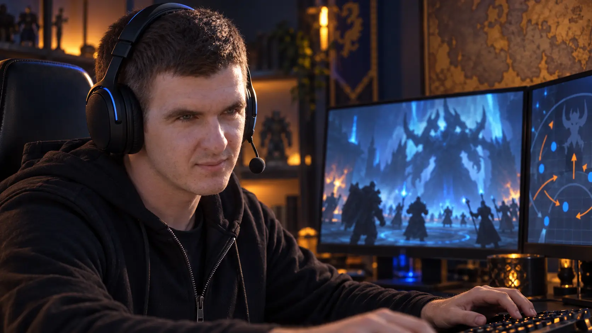
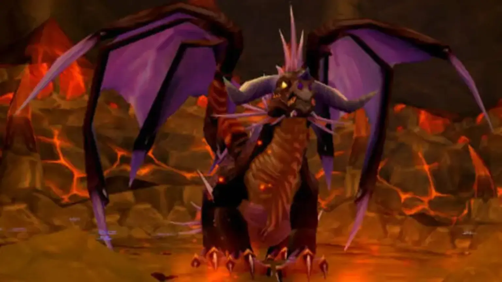
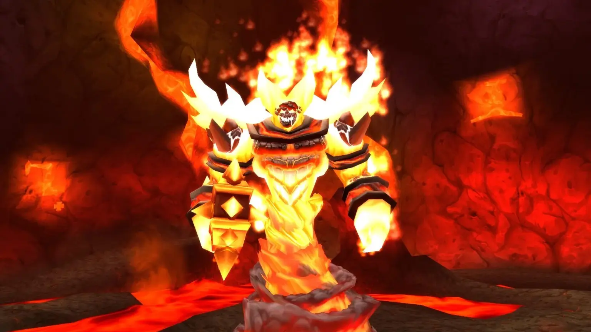
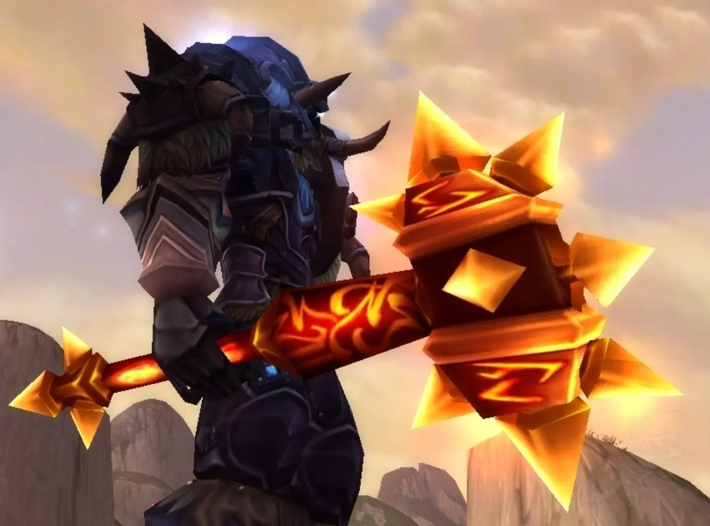
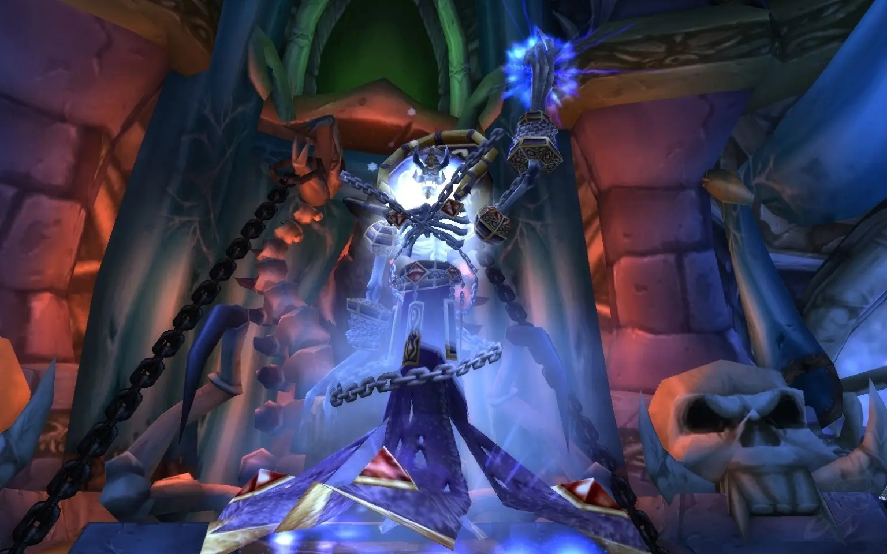
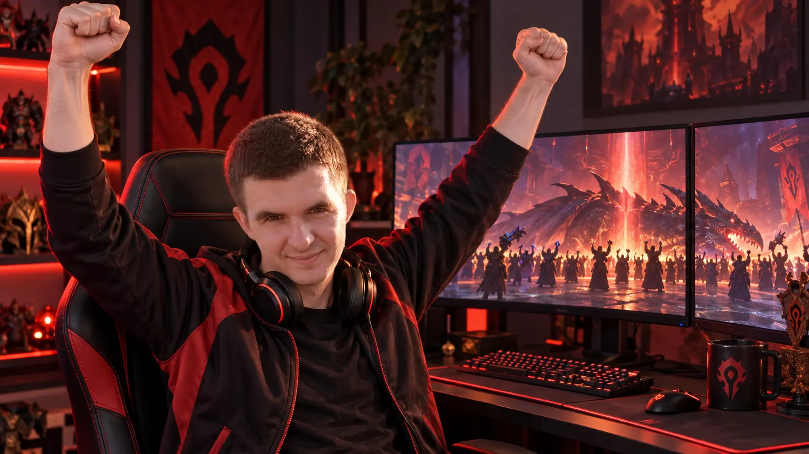

World of Warcraft Classic · Main Tank
Пока ты ходил в школу, я водил твою маму в Пещеры Стенаний
Танк, с которым рейд не вайпается.
15+лет в World of Warcraft
Сотнипроведённых рейдов
Тысячипобеждённых боссов
40игроков под руководством

15+лет опыта
От классики до наших дней
Hellbi
Прошёл путь от той самой классики до сегодняшних дней в составе топовых гильдий
Его задача — не просто впитывать урон. Hellbi держит угрозу, позиционирует босса, распределяет защитные способности и оставляет рейду пространство для победы.
Он закрыл весь рейдовый контент на хардкоре — там, где одна ошибка заканчивает не только бой, но и историю персонажа.
Главный принципПервым входит в бой. Последним падает. Если вообще падает.
Рейдовая хроника
От первого пула до последнего лута
Кадры из эпохи, когда тактика передавалась в голосовом чате, а каждая победа действительно чего-то стоила.




урона
Достижения
Сервер запоминает первых
- 01Первый на сервере с Сульфурасом
- 02Тот, кто ударил в гонг открытия Врат Ан’Киража
- 03Первое закрытие Наксрамаса на сервере
- 04Закрыл весь рейдовый контент на хардкоре
Сильный танк не просто впитывает урон. Он создаёт условия, в которых весь рейд может показать максимум.

Набор в состав
Связаться со мной по вопросам вступления в гильдию
Расскажи о своём персонаже, опыте и роли. Обсудим состав, рейдовое время и дальнейшие цели.
Написать ВКонтакте